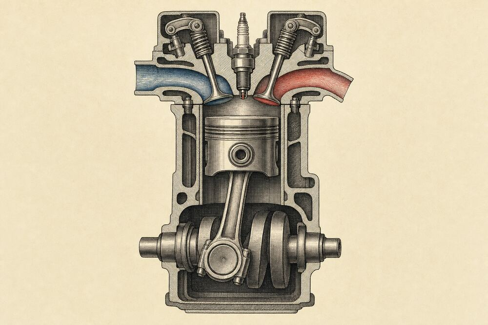
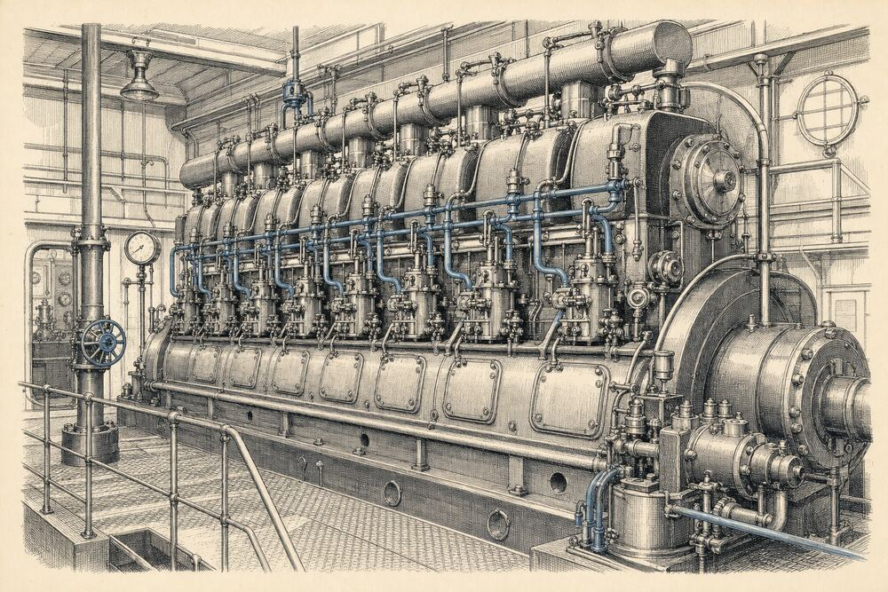

Motoare termice
Un piston coboară, o scânteie aprinde amestecul, un arbore se rotește. Cât din căldura arderii devine lucru mecanic — și de ce niciodată toată? Pornește motoarele Otto și Diesel, parcurge ciclul Carnot și calculează randamentul fiecărui ciclu.
Din căldură, lucru mecanic
Motoarele termice sunt dispozitive care efectuează lucru mecanic dacă primesc căldură rezultată din arderea unui combustibil.
Experiența arată că un sistem termodinamic care schimbă căldură cu două termostate de temperaturi diferite poate ceda lucru mecanic în exterior — deci poate funcționa ca motor termic.
Se numește transformare bitermă o transformare în care sistemul termodinamic schimbă căldură cu două termostate având temperaturi diferite.
Un motor termic care efectuează un proces ciclic biterm:
- primește căldura \(Q_p\) de la un termostat de temperatură \(T_c\), numit sursa caldă;
- cedează căldura \(Q_c\;(<0)\) unui termostat de temperatură \(T_r<T_c\), numit sursa rece.
Procesul este ciclic, deci sistemul revine în starea inițială și \(\Delta U=0\). Din principiul I al termodinamicii, lucrul mecanic cedat în exterior este:
\[L=Q_p+Q_c=Q_p-|Q_c|.\]
Figura alăturată arată transferurile de energie: motorul însuși este cercul din mijloc. La mașina frigorifică săgețile se inversează — ea consumă lucru mecanic ca să ducă căldura de la rece la cald.
Fiecare punct colorat este un „pachet” de căldură. Mărește \(|Q_c|\) și urmărește cum scade lucrul mecanic \(L\). Încearcă să faci \(|Q_c|=0\): simularea nu te lasă — vei vedea de ce în secțiunea următoare.
- Qp
- —
- |Qc|
- —
- L
- —


După locul unde are loc arderea combustibilului, motoarele termice se împart în două categorii:
- motoare cu ardere internă — combustibilul arde în interiorul cilindrului (motorul Otto, motorul Diesel, motorul cu reacție);
- motoare cu ardere externă — combustibilul arde în afara mașinii și încălzește un fluid de lucru (mașina cu abur, turbina cu abur, motorul Stirling).
De ce η < 1
Eficiența cu care un motor transformă căldura în lucru mecanic se măsoară prin randamentul termic.
Randamentul termic al unui motor este raportul dintre lucrul mecanic cedat exteriorului într-un ciclu și căldura primită de la sursa caldă: \[\eta=\frac{L}{Q_p}.\]
Randamentul compară „ceea ce se obține” (lucrul mecanic util \(L\)) cu „ceea ce se consumă” (căldura \(Q_p\), obținută de exemplu prin arderea combustibilului). Este o mărime adimensională și se exprimă adesea în procente.
Înlocuind \(L=Q_p-|Q_c|\):
\[\eta=1-\frac{|Q_c|}{Q_p}.\]
Întotdeauna \(|Q_c|\neq0\). Dacă motorul nu ar ceda deloc căldură sursei reci, transformarea ciclică ar fi monotermă, iar conform principiului al II-lea al termodinamicii un sistem nu poate ceda lucru mecanic într-o transformare ciclică monotermă. Așadar:
Randamentul unui motor termic este întotdeauna subunitar: \(\eta<1\).
Randamentul \(\eta\) studiat aici este teoretic. Din cauza pierderilor — frecări, căldură scăpată prin pereții cilindrului, ardere incompletă — un motor real are întotdeauna un randament mai mic decât \(\eta\). Activează în figură „Pierderi reale”.
- L = Qp − |Qc|
- —
- η teoretic
- —
- η real
- —
Motorul Otto în patru timpi
Motorul Otto este un motor cu aprindere prin scânteie. Combustibilul — un amestec de vapori de benzină și aer — este aprins de o scânteie electrică produsă de o bujie.
Pornind de la capătul superior al cursei sale (punctul mort superior), un ciclu cuprinde patru curse ale pistonului:
- Admisia. Pistonul coboară; supapa de admisie (A) este deschisă, cea de evacuare (E) închisă. În cilindru pătrunde amestecul exploziv de benzină și aer.
- Compresia. Supapa A se închide, pistonul urcă și comprimă aproximativ adiabatic amestecul.
- Timpul motor. Lângă capătul de sus al cursei, scânteia aprinde amestecul, care arde foarte rapid: temperatura și presiunea cresc brusc, practic la volum constant. Gazele arse împing pistonul în jos, destinzându-se aproximativ adiabatic — singurul timp în care se produce lucru mecanic.
- Evacuarea. Jos, se deschide supapa E: presiunea scade rapid, practic la volum constant, până la presiunea atmosferică. Pistonul urcă și împinge afară gazele arse.
Apoi supapa E se închide, A se deschide și ciclul se repetă. Pentru un ciclu complet, arborele cotit face două rotații.
Ciclul real al motorului Otto este aproximat de un ciclu ideal, numit ciclu Otto, format din două adiabate și două izocore.
În dreapta motorului, punctul roșu parcurge diagrama p–V a ciclului ideal. Ciclul termodinamic ideal este bucla 1→2→3→4→1. Admisia și evacuarea sunt curse de schimb de gaze, în afara acestei bucle. Diagrama arată schematic numai cele patru transformări ideale, fără traseele de admisie și evacuare. La izocore, pistonul staționează pentru a face vizibil schimbul de căldură. Comută pe Diesel ca să vezi diferența.
- timpul
- —
- supape A / E
- —
- unghiul arborelui
- —
Motorul Diesel: fără bujie
Un alt motor în patru timpi este motorul Diesel. În animația motorului în patru timpi, în locul bujiei se află o pompă de injecție cu injector.
- În cilindru se aspiră numai aer, la presiunea atmosferică.
- Aerul este comprimat aproximativ adiabatic până la presiuni de ordinul a 40–50 atm, când temperatura lui ajunge la 600–800 °C.
- În acest moment se injectează motorina, la presiune foarte mare, astfel încât să fie pulverizată extrem de fin.
- Combustibilul se autoaprinde la contactul cu aerul foarte cald. Arderea durează cât timp se injectează, în timp ce pistonul a început să coboare — presiunea rămâne aproximativ constantă.
Ciclul real este aproximat de un ciclu ideal, numit ciclu Diesel, format din două adiabate, o izobară și o izocoră.
Pentru o compresie adiabatică \(T_2=T_1\,\varepsilon^{\gamma-1}\) și \(p_2=p_1\,\varepsilon^{\gamma}\). Motorul Diesel are nevoie de aer foarte fierbinte, deci de un raport de compresie mare (\(\varepsilon\approx14\ldots22\)). Motorul Otto nu are voie să încălzească prea tare amestecul, altfel acesta s-ar aprinde singur înainte de scânteie (detonație, „bătaie” în motor) — de aceea \(\varepsilon\approx8\ldots12\).

Experiment separat: comprimă gazul și urmărește temperatura și autoaprinderea.
- V / Vmax
- —
- p
- —
- t
- —
Mașini frigorifice
Mașinile frigorifice preiau căldura \(Q_p\) de la o sursă rece și o transferă unei surse calde, consumând un lucru mecanic \(L\), pe care îl transformă tot în căldură.
Sursa caldă primește, așadar, căldura \(|Q_c|=Q_p+L\).
Interesul este încălzirea sursei calde (o casă iarna). Eficacitatea ei este \[\varepsilon=\frac{|Q_c|}{L}.\]
Interesul este să se scoată o cantitate cât mai mare de căldură din incinta frigorifică. Eficacitatea lui este \[\varepsilon=\frac{Q_p}{L}.\]
Eficacitatea (numită și coeficient de performanță) poate fi mai mare decât 1 — nu este un randament! O pompă de căldură cu \(\varepsilon=4\) livrează casei 4 J de căldură pentru fiecare joule de energie electrică, pentru că 3 J îi „pompează” din aerul rece de afară. Atenție și la notație: aici \(\varepsilon\) nu are legătură cu raportul de compresie \(\varepsilon\) din §7–9.
O mașină frigorifică ideală (ciclu Carnot inversat) are \(\varepsilon_{\text{frigider}}=\dfrac{T_r}{T_c-T_r}\) și \(\varepsilon_{\text{pompă}}=\dfrac{T_c}{T_c-T_r}\). Cu cât diferența de temperatură este mai mică, cu atât mașina este mai eficace.

- Qp (de la rece)
- —
- |Qc| (spre cald)
- —
- eficacitatea ε
- —
Ciclul Carnot
Date fiind două termostate la temperaturi diferite, care este cel mai mare randament posibil și în ce condiții se realizează?
Răspunsul l-a dat Sadi Carnot, care a imaginat în 1824 un motor termic ideal, de randament maxim. El funcționează după un ciclu numit astăzi ciclul Carnot.
Ciclul Carnot este alcătuit din patru transformări reversibile: două izoterme și două adiabate: 1→2 izotermă (\(T_c\)), 2→3 adiabată, 3→4 izotermă (\(T_r\)), 4→1 adiabată.
Substanța de lucru — \(\nu\) moli de gaz ideal — schimbă căldură numai pe izoterme:
\[Q_p=\nu RT_c\ln\frac{V_2}{V_1},\qquad Q_c=\nu RT_r\ln\frac{V_4}{V_3}.\]
Randamentul este atunci \[\eta_C=1-\frac{T_r}{T_c}\cdot\frac{\ln\dfrac{V_3}{V_4}}{\ln\dfrac{V_2}{V_1}}.\]
Legea transformării adiabatice pentru 2→3 și 4→1: \(T_cV_2^{\gamma-1}=T_rV_3^{\gamma-1}\) și \(T_cV_1^{\gamma-1}=T_rV_4^{\gamma-1}\). Împărțindu-le: \(\dfrac{V_2}{V_1}=\dfrac{V_3}{V_4}\), deci logaritmii se simplifică:
\[\eta_C=1-\frac{T_r}{T_c}.\]
Randamentul ciclului Carnot reversibil nu depinde de natura substanței de lucru, ci numai de temperaturile celor două termostate.
Toate motoarele care funcționează pe baza ciclului Carnot reversibil între două temperaturi date au același randament, indiferent de natura substanței de lucru.
Mai mult, niciun motor care funcționează între două temperaturi date nu poate avea un randament mai mare decât un motor Carnot care funcționează între aceleași temperaturi.
Motorul Carnot este un motor ideal: el nu poate fi realizat practic. Transformările reversibile ar trebui să fie infinit de lente — un astfel de motor ar avea putere zero.
T₁ = Tc · T₂ = Tr · Q₁ = Qp · Q₂ = |Qc|
- Qp (1→2)
- —
- |Qc| (3→4)
- —
- L = Qp − |Qc|
- —
- V3/V4
- —
- η = 1 − |Qc|/Qp
- —
- 1 − Tr/Tc
- —
Randamentul ciclului Otto
Vom calcula randamentul ciclurilor ideale asociate unor motoare reale și îl vom compara, de fiecare dată, cu randamentul ciclului Carnot. Metoda, generală, este să întocmim un tabel cu legea și căldura fiecărei transformări.
Pentru ciclul Otto, raportul de compresie este \(\varepsilon=V_1/V_2\).
| Transf. | Legea | Căldura schimbată |
|---|---|---|
| 1 → 2 | \(T_1V_1^{\gamma-1}=T_2V_2^{\gamma-1}\) | \(Q_{12}=0\) |
| 2 → 3 | \(\dfrac{p_2}{T_2}=\dfrac{p_3}{T_3}\) | \(Q_{23}=\nu C_V(T_3-T_2)>0\) |
| 3 → 4 | \(T_3V_2^{\gamma-1}=T_4V_1^{\gamma-1}\) | \(Q_{34}=0\) |
| 4 → 1 | \(\dfrac{p_4}{T_4}=\dfrac{p_1}{T_1}\) | \(Q_{41}=\nu C_V(T_1-T_4)<0\) |
Pentru a stabili semnul căldurii trebuie știut care temperatură este mai mare. Din \(pV=\nu RT\): în diagrama p–V, temperatura unei stări este cu atât mai mare cu cât punctul reprezentativ este mai îndepărtat de axe (produsul \(pV\) mai mare).
Pornind de la \(\eta=1-|Q_c|/Q_p\) și folosind tabelul:
\[\eta_O=1-\frac{|Q_{41}|}{Q_{23}}=1-\frac{T_4-T_1}{T_3-T_2}=1-\frac{T_1}{T_2}\cdot\frac{\dfrac{T_4}{T_1}-1}{\dfrac{T_3}{T_2}-1}.\]
Ultima expresie s-a obținut dând forțat factor comun temperaturile mai mici. Din ecuațiile adiabatelor rezultă \(\dfrac{T_4}{T_1}=\dfrac{T_3}{T_2}\), deci \(\eta_O=1-\dfrac{T_1}{T_2}\). Dar din adiabata 1→2, \(\dfrac{T_1}{T_2}=\dfrac{1}{\varepsilon^{\gamma-1}}\):
\[\eta_O=1-\frac{1}{\varepsilon^{\gamma-1}}.\]
Folosind ecuațiile transformărilor din tabel, arătați că \(T_1\) și \(T_3\) sunt temperaturile extreme — minimă și, respectiv, maximă — atinse la parcurgerea ciclului Otto.
Rezolvare și consecință
Pe adiabata 1→2 volumul scade, deci \(T_2=T_1\varepsilon^{\gamma-1}>T_1\). Pe izocora 2→3 se primește căldură: \(T_3>T_2\). Pe adiabata 3→4: \(T_4=T_3/\varepsilon^{\gamma-1}<T_3\), iar \(T_4=T_1\cdot T_3/T_2>T_1\). Deci \(T_1<T_2,T_4<T_3\).
Dar \(T_2<T_3\Rightarrow\dfrac{1}{T_2}>\dfrac{1}{T_3}\Rightarrow\dfrac{T_1}{T_2}>\dfrac{T_1}{T_3}\Rightarrow1-\dfrac{T_1}{T_2}<1-\dfrac{T_1}{T_3}\Rightarrow\eta_O<\eta_C.\)
Randamentul ciclului Otto este mai mic decât randamentul ciclului Carnot care funcționează între temperaturile extreme \(T_1\) și \(T_3\) atinse la parcurgerea ciclului Otto.
- T1 / T2
- —
- T3 / T4
- —
- Q23 / |Q41|
- —
- ηO
- —
- ηC (T1, T3)
- —
- L (1 mol)
- —
Randamentul ciclului Diesel
Calculăm randamentul \(\eta_D\) al ciclului Diesel în funcție de rapoartele de compresie \(\varepsilon=V_1/V_2\) și \(\rho=V_3/V_2\) (raportul de destindere preliminară, la presiune constantă).
| Transf. | Legea | Căldura schimbată |
|---|---|---|
| 1 → 2 | \(T_1V_1^{\gamma-1}=T_2V_2^{\gamma-1}\) | \(Q_{12}=0\) |
| 2 → 3 | \(\dfrac{V_2}{T_2}=\dfrac{V_3}{T_3}\) | \(Q_{23}=\nu C_p(T_3-T_2)>0\) |
| 3 → 4 | \(T_3V_3^{\gamma-1}=T_4V_1^{\gamma-1}\) | \(Q_{34}=0\) |
| 4 → 1 | \(\dfrac{p_4}{T_4}=\dfrac{p_1}{T_1}\) | \(Q_{41}=\nu C_V(T_1-T_4)<0\) |
Cu \(C_p=\gamma C_V\):
\[\eta_D=1-\frac{|Q_{41}|}{Q_{23}}=1-\frac{T_4-T_1}{\gamma(T_3-T_2)}=1-\frac{T_1}{T_2}\cdot\frac{\dfrac{T_4}{T_1}-1}{\gamma\left(\dfrac{T_3}{T_2}-1\right)}.\]
Folosind legile transformărilor din tabel, arătați că \(\dfrac{T_1}{T_2}=\dfrac{1}{\varepsilon^{\gamma-1}};\ \dfrac{T_3}{T_2}=\rho;\ \dfrac{T_4}{T_1}=\rho^{\gamma}.\)
Rezolvare
Primele două rezultă direct din adiabata 1→2 și din izobara 2→3. Pentru a treia, împărțim adiabatele 3→4 și 1→2: \(\dfrac{T_4}{T_1}=\dfrac{T_3}{T_2}\left(\dfrac{V_3}{V_2}\right)^{\gamma-1}=\rho\cdot\rho^{\gamma-1}=\rho^{\gamma}.\)
Cu aceste relații se obține expresia finală:
\[\eta_D=1-\frac{\rho^{\gamma}-1}{\gamma\,\varepsilon^{\gamma-1}(\rho-1)}.\]
Arătați că \(T_1\) și \(T_3\) sunt temperaturile extreme ale ciclului Diesel. Randamentul ciclului Carnot care funcționează între ele este \[\eta_C=1-\frac{T_1}{T_3}=1-\frac{T_1}{T_2}\cdot\frac{T_2}{T_3}=1-\frac{1}{\varepsilon^{\gamma-1}\rho}.\]
\(\varepsilon=10,\ \rho=2,\ \gamma=1{,}40\). Atunci \(\eta_D=0{,}534=53{,}4\%\); \(\eta_C=0{,}801=80{,}1\%\;(>\eta_D)\). Apasă în figură „Aplicația numerică”.
- ηD
- —
- ηC (T1, T3)
- —
- ηO (același ε)
- —
La același \(\varepsilon\), \(\eta_D<\eta_O\) (factorul \(\frac{\rho^\gamma-1}{\gamma(\rho-1)}\) este mai mare ca 1). Dar motorul Diesel lucrează cu \(\varepsilon\) aproape dublu: un Diesel cu \(\varepsilon=18,\ \rho=2\) are \(\eta_D\approx63\%\), mai mult decât un Otto cu \(\varepsilon=9\) (\(\eta_O\approx58\%\)). Verifică în figură, cu „Compară cu Otto”.
Ciclul Rankine
Ultimul ciclu studiat este ciclul Rankine, care aproximează ciclul real de funcționare al turbinei cu abur.
În această aproximație didactică, substanța de lucru este tratată ca un gaz ideal, iar ciclul are patru transformări:
- 1 → 2: izocoră — creșterea presiunii (pompa de alimentare a cazanului);
- 2 → 3: izobară — vaporizarea și supraîncălzirea în cazan;
- 3 → 4: adiabată — destinderea în turbină;
- 4 → 1: izobară — condensarea, cu cedare de căldură.
Rapoartele de compresie sunt \(\varepsilon=V_4/V_1\) și \(\rho=V_3/V_1\).
| Transf. | Legea | Căldura schimbată |
|---|---|---|
| 1 → 2 | \(\dfrac{p_1}{T_1}=\dfrac{p_2}{T_2}\) | \(Q_{12}=\nu C_V(T_2-T_1)>0\) |
| 2 → 3 | \(\dfrac{V_1}{T_2}=\dfrac{V_3}{T_3}\) | \(Q_{23}=\nu C_p(T_3-T_2)>0\) |
| 3 → 4 | \(T_3V_3^{\gamma-1}=T_4V_4^{\gamma-1}\) | \(Q_{34}=0\) |
| 4 → 1 | \(\dfrac{V_4}{T_4}=\dfrac{V_1}{T_1}\) | \(Q_{41}=\nu C_p(T_1-T_4)<0\) |
Din izobara 4→1: \(T_4=\varepsilon T_1\). Din adiabata 3→4 scrisă cu presiuni, \(p_2V_3^\gamma=p_1V_4^\gamma\Rightarrow p_2/p_1=(\varepsilon/\rho)^\gamma\), deci \(T_2=T_1(\varepsilon/\rho)^\gamma\) și \(T_3=\rho T_2\). Căldura primită este \(Q_{12}+Q_{23}\), cea cedată \(|Q_{41}|\):
\[\eta_R=1-\frac{\gamma(\varepsilon-1)}{\left(\frac{\varepsilon}{\rho}\right)^{\gamma}\left[1+\gamma(\rho-1)\right]-1}.\]
Turbina reală lucrează cu apă care își schimbă starea de agregare (vaporizare în cazan, condensare în condensator). Modelul cu gaz ideal păstrează forma ciclului și metoda de calcul, dar valorile numerice ale randamentului sunt doar orientative.
- ηR
- —
- T3 / T1
- —
- ηC (T1, T3)
- —
Glosar și formule
| Noțiunea | Ce înseamnă | Formulă / exemplu |
|---|---|---|
| Motor termic | dispozitiv care transformă căldura (din arderea unui combustibil) în lucru mecanic | Otto, Diesel, turbina cu abur |
| Transformare bitermă | schimb de căldură cu două termostate de temperaturi diferite | \(T_c>T_r\) |
| Sursa caldă / sursa rece | termostatul de la care se primește \(Q_p\) / căruia i se cedează \(Q_c\) | \(T_c\), \(T_r\) |
| Lucrul mecanic pe ciclu | principiul I pentru un ciclu (\(\Delta U=0\)) | \(L=Q_p-|Q_c|\) |
| Randament termic | lucrul util raportat la căldura primită; adimensional, subunitar | \(\eta=L/Q_p=1-|Q_c|/Q_p\) |
| Ardere internă / externă | combustibilul arde în cilindru / în afara mașinii | Otto, Diesel / mașina cu abur |
| Ciclul Otto | două adiabate și două izocore | \(\eta_O=1-1/\varepsilon^{\gamma-1}\) |
| Ciclul Diesel | două adiabate, o izobară și o izocoră | \(\eta_D=1-\dfrac{\rho^\gamma-1}{\gamma\varepsilon^{\gamma-1}(\rho-1)}\) |
| Cei patru timpi | admisia, compresia, timpul motor (aprindere + destindere), evacuarea | 2 rotații ale arborelui / ciclu |
| Raport de compresie | raportul dintre volumul maxim și cel minim al cilindrului | \(\varepsilon=V_1/V_2\) |
| Pompă de căldură | mașină frigorifică folosită pentru încălzire | \(\varepsilon=|Q_c|/L\) |
| Frigider | mașină frigorifică folosită pentru răcire | \(\varepsilon=Q_p/L\) |
| Ciclul Carnot | două izoterme și două adiabate reversibile | \(\eta_C=1-T_r/T_c\) |
| Teorema lui Carnot | randamentul Carnot nu depinde de substanța de lucru și este maxim între două temperaturi date | \(\eta\le\eta_C\) |
| Ciclul Rankine | ciclul turbinei cu abur: izocoră, izobară, adiabată, izobară | \(\varepsilon=V_4/V_1,\ \rho=V_3/V_1\) |
Verifică ce ai învățat
Probleme de verificare
Scrie rezultatul (se acceptă o abatere de 2%) și apasă Verifică. Randamentele se scriu în procente. Dacă te blochezi, cere un indiciu; rezolvarea completă apare după un răspuns corect sau la cerere.
Resurse și descărcare
Toată lecția pentru calculator sau stick: dezarhivează și deschide index.html — funcționează fără internet.
Înapoi la începutul lecției.
Lecție conexăCalorimetrieEcuația calorimetrică și laboratoare virtuale.
Lecție conexăNoțiuni termodinamice de bazăCăldura, energia internă, temperatura și transformările gazului ideal.
Simulare · PhET ColoradoProprietățile gazelorComprimă și încălzește un gaz: presiune, volum, temperatură.
Enciclopedie · WikipediaCiclul CarnotIstoric, demonstrații și diagrame T–S.
Enciclopedie · WikipediaMotorul cu ardere internăTipuri de motoare, istoric și componente.
Enciclopedie · WikipediaMotorul DieselAprinderea prin compresie și aplicațiile ei.
Referință · HyperPhysicsHeat enginesCicluri Carnot, Otto, Diesel și pompe de căldură (în engleză).